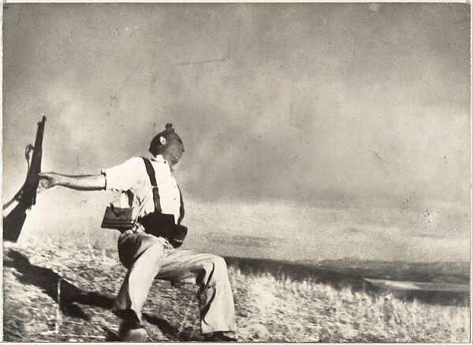
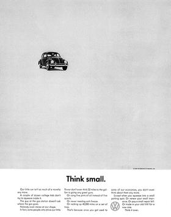
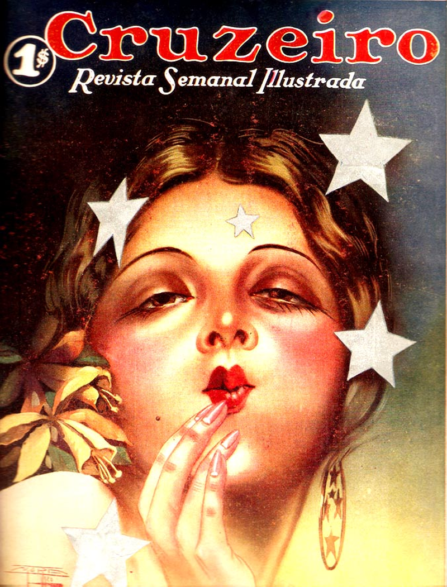
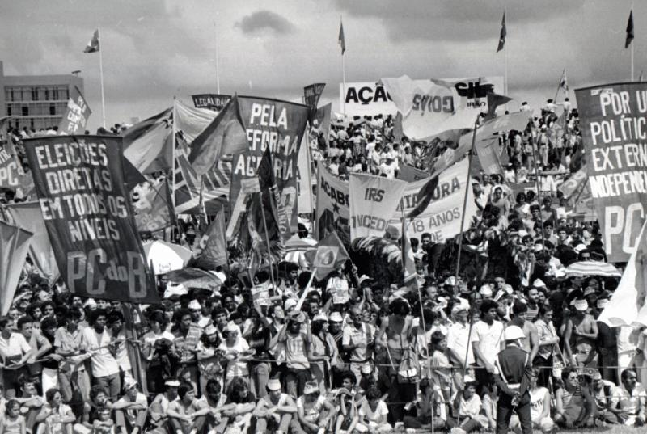
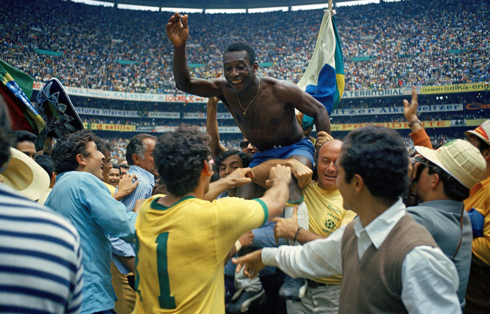

imagens/banca/01-falling-soldier.jpg
Já está no projeto — se este placeholder aparecer, verifique se o nome do arquivo bate.

imagens/banca/02-anuncio.jpg
Salve em alta resolução. Print de página de revista funciona bem.

imagens/banca/03-capa-revista.jpg
Site da editora costuma ter PNG/JPG da capa em alta. Foto de banca também serve.

imagens/banca/04-foto-historica-br.jpg
Wikimedia Commons é a fonte mais limpa. Filtre por "License: public domain" ou "CC".
imagens/banca/05-capa-album.jpg
Spotify ou Apple Music exportam a capa em alta. Discogs também.

imagens/banca/06-foto-esportiva.jpg
Acervo Globo Esporte, Reuters, ou Wikimedia Commons. Procure por "high resolution".